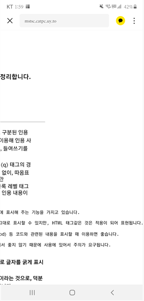

blockquote 태그는 블럭으로 구분된 인용 텍스트입니다. ⟨cite⟩ 속성을 이용해 인용 사이트 주소를 표시할 수 있으며, 들여쓰기를 통해 인용이 표현됩니다.
이것이 ⟨q⟩ 태그와 다른 점은, ⟨q⟩ 태그의 경우 인라인 레벨 태그로 줄바꿈 없이, 따옴표를 이용해 인용임이 표시되지만 ⟨blockquote⟩ 태그의 경우 블록 레벨 태그이기 때문에 블록 구분을 통해 인용 내용이 구분된다는 점입니다.
pre태그의 경우, 입력하는 그대로 화면에 표시해 주는 기능을 가지고 있습니다. PRE 태그 사용시 주의 사항 :
js 코드 같은 것들은 그대로 표시할 수 있지만, HTML 태그같은 것은 적용이 되어 표현됩니다.
⟨code⟩나 ⟨samp⟩, ⟨kbd⟩ 등 코드와 관련된 내용을 표시할 때 이용하면 좋습니다.
다만, 웹 접근성 부분에서 좋지 않기 때문에 사용에 있어서 주의가 요구됩니다.
q태그는 따옴표로 표시되는 인라인 레벨 태그입니다.